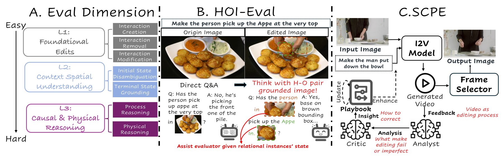
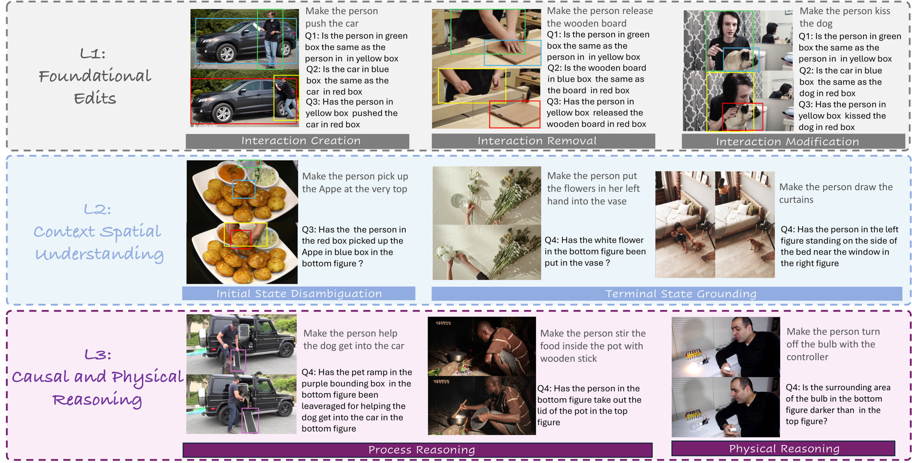
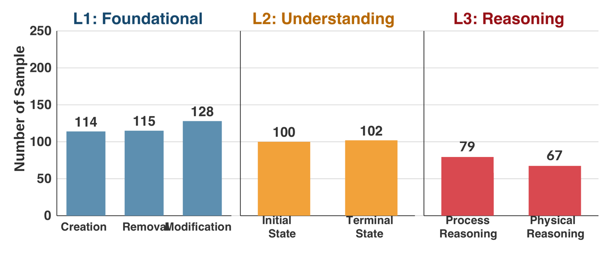
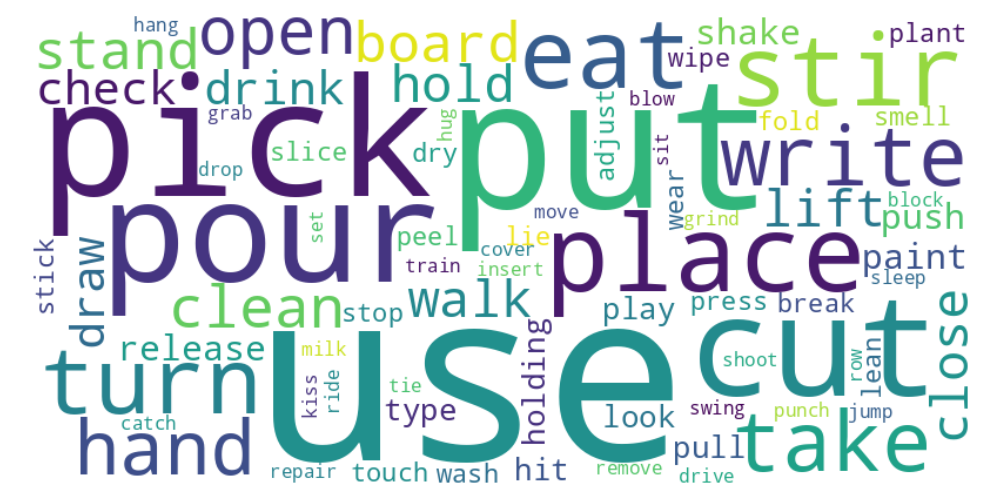
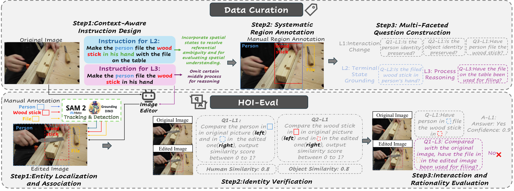
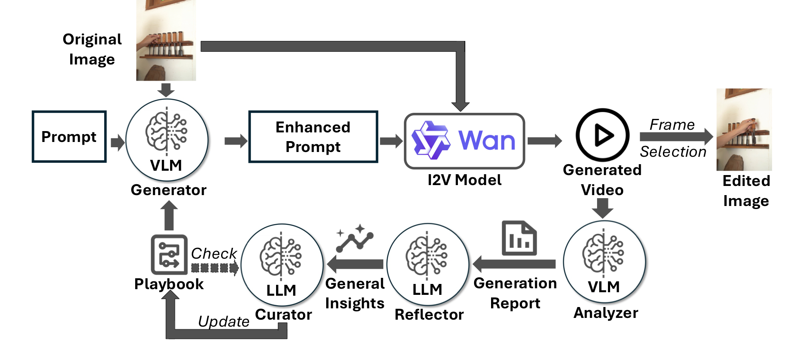
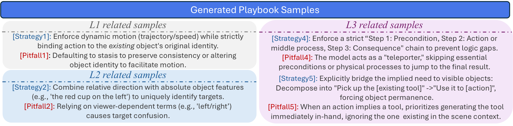
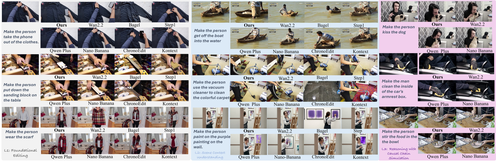

Foundational Edits
Create, remove, or modify the interaction between a specific human-object pair while preserving both entity identities.
ICML 2026 submission · Human-Object Interaction Editing
Wangxuan Institute of Computer Technology, Peking University · National Institute of Health Data Science, Peking University
Abstract
Current image editing methods excels at static attributes but fails at complex Human-Object Interactions (HOI), a critical challenge unaddressed by existing benchmarks that conflate HOI with static attributes, relying on global metrics incapable of simultaneously assessing dynamic interaction validity and entangled human-object pair preservation. Thus, we first introduce HOI-Edit, a comprehensive benchmark with three progressive cognitive levels, which features an automated metric HOI-Eval that first reliably evaluates instance-level interaction by letting VLM Q&A after thinking with images containing grounded Human-Object pair. Considering the task's essence of remodeling dynamic relationships, we benchmark Image-to-Video (I2V) models, finding them inherently suited for dynamic editing due to their temporal generation capabilities. Crucially, beyond superior performance, this capability provides a "replay of the failure process", offering unique diagnosability into why errors occur. We thus propose SCPE (Self-Correcting Process Editing), a novel, agentic self-correcting framework that constrains the generation of I2V models through iteratively refined prompts, enabling the generated videos to more accurately present the target HOI. Extracted frames from these videos are the final editing results. On HOI-Edit, SCPE achieves performance competitive with state-of-the-art (SOTA) editing models like Nano Banana on interaction.

HOI-Edit Benchmark
Create, remove, or modify the interaction between a specific human-object pair while preserving both entity identities.
Resolve spatial references, select the intended target among distractors, and place entities into instruction-consistent terminal states.
Infer prerequisite steps, tool use, illumination changes, and non-rigid physical effects that are implied but not explicitly described.



Data Curation and HOI-Eval Metric
We curate context-aware HOI editing instructions, annotate the interacting human, object, and auxiliary regions, and construct grounding-based questions for identity, interaction, spatial, and causal verification. HOI-Eval then tracks these grounded regions into edited outputs so the evaluator judges the intended pair rather than the global image.

Human, object, and auxiliary boxes are propagated from the source image to the edited result to isolate the intended interaction pair.
Cropped and tagged regions let the evaluator score human and object consistency without being distracted by global scene similarity.
Context-aware questions penalize edits that look plausible globally but violate the requested spatial, causal, or physical constraints.
SCPE
I2V models reveal how a failed edit unfolds. SCPE uses that temporal evidence to refine the prompt, update a reusable playbook, and select the best frame as the final edit.

Combines the initial image instruction with playbook knowledge into an I2V prompt.
Inspects sampled video frames and writes sample-specific failure reports.
Turns concrete failures into general insights such as proximity bias or missing steps.
Updates strategies, templates, and pitfalls inside the dynamic Playbook.
The Playbook stores reusable prompting strategies learned from failures.

Results
| Method | Source | L1: Foundational | L2: Understanding | L3: Reasoning | ||||||||
|---|---|---|---|---|---|---|---|---|---|---|---|---|
| I | H | O | I | I+Q&A | H | O | I | I+Q&A | H | O | ||
| Flux.1 Kontext | Open | 0.4961 | 0.8991 | 0.5347 | 0.5192 | 0.2780 | 0.8998 | 0.4631 | 0.2052 | 0.0423 | 0.9653 | 0.8777 |
| ByteMorph | Open | 0.4469 | 0.2000 | 0.2220 | 0.4279 | 0.2240 | 0.2227 | 0.1757 | 0.4156 | 0.1571 | 0.7480 | 0.6584 |
| Step1X-Edit | Open | 0.5396 | 0.7985 | 0.6533 | 0.5159 | 0.4058 | 0.7997 | 0.6472 | 0.5874 | 0.4194 | 0.8446 | 0.7640 |
| ChronoEdit | Open | 0.5823 | 0.7418 | 0.6023 | 0.5574 | 0.4608 | 0.7515 | 0.6160 | 0.5620 | 0.4345 | 0.8205 | 0.7359 |
| Bagel | Open | 0.6326 | 0.7940 | 0.4790 | 0.6065 | 0.4781 | 0.7804 | 0.5030 | 0.6013 | 0.4061 | 0.8516 | 0.5701 |
| Qwen-Image-Edit PLUS | Closed | 0.6128 | 0.9343 | 0.8775 | 0.5984 | 0.4928 | 0.9395 | 0.7924 | 0.5878 | 0.3870 | 0.9593 | 0.8602 |
| Nano Banana | Closed | 0.7271 | 0.9537 | 0.8609 | 0.7040 | 0.5960 | 0.9590 | 0.7706 | 0.7399 | 0.5782 | 0.9743 | 0.9185 |
| Wan 2.2 I2V | Open | 0.6908 | 0.9166 | 0.7823 | 0.6608 | 0.5526 | 0.9113 | 0.7272 | 0.6822 | 0.5343 | 0.9306 | 0.8511 |
| Wan 2.2 I2V + SCPE | Open | 0.8423 | 0.9260 | 0.8640 | 0.7909 | 0.6952 | 0.9269 | 0.8260 | 0.8053 | 0.6528 | 0.9518 | 0.9073 |

Citation
@inproceedings{gao2026hoiedit,
title = {Taming I2V Models for Image HOI Editing: A Cognitive Benchmark and Agentic Self-Correcting Framework},
author = {Gao, Jiayi and Chen, Qingchao and Peng, Yuxin and Liu, Yang},
booktitle = {International Conference on Machine Learning},
year = {2026}
}